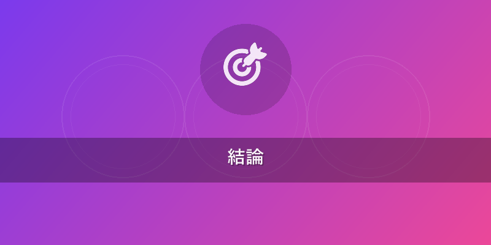
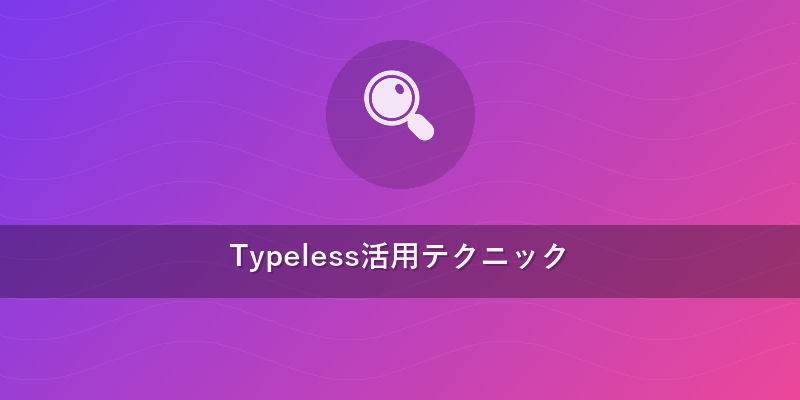
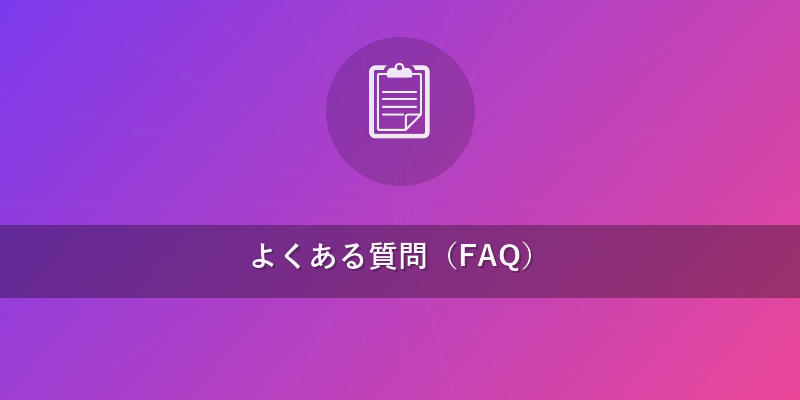

Typeless 使い方 2026年最新版！AI音声入力完全攻略
この記事でわかること
- Typelessのインストールから基本的な使い方まで、迷わず始められる具体的な手順。
- フィラーワード除去やリアルタイム多言語翻訳など、2026年最新のTypeless先進機能を活用した効率的な作業術。
- 他社ツールとの客観的な比較を通じて、Typelessがあなたの作業スタイルに最適である理由。

結論
2026年現在、AI音声入力ツールの進化は目覚ましく、その中でもTypelessは圧倒的な使いやすさと高精度を誇り、まさに「決定版」と呼ぶにふさわしいツールです。直感的な操作性、驚異的な認識精度、そしてフィラーワード除去やリアルタイム多言語翻訳といった革新的な機能は、あなたのタイピング作業を過去のものにし、生産性を劇的に向上させます。初心者でも数分で使い始められ、その恩恵をすぐに実感できるでしょう。この記事を読めば、Typeless 使い方 の全てが分かり、あなたのデジタルライフは大きく変わります。
本題
Typelessのインストールと初期設定：5分でAI音声入力環境を構築
Typelessを使い始めるのは非常に簡単です。以下の手順に従って、わずか数分であなたのPCにAI音声入力環境を構築しましょう。Typeless 始め方 は、これほどシンプルです。
- Typeless公式サイトへアクセス
- まずはTypeless公式サイトにアクセスします。
- 最新版のダウンロードリンクを見つけてください。
- インストーラーのダウンロード
- お使いのOS（Windows/macOS/Linux）に合ったインストーラーをダウンロードします。
- ファイルサイズは比較的小さく、すぐにダウンロードが完了します。
- Typelessのインストール
- ダウンロードしたインストーラーファイルを実行します。
- 画面の指示に従い、「次へ」または「Install」をクリックして進めます。
- 特別な設定は不要で、数クリックでインストールが完了します。これは一般的なソフトウェアのインストールと同じ要領です。
- 初期設定とマイクの選択
- Typelessを初めて起動すると、初期設定ウィザードが表示されます。
- マイクの選択: お使いのマイク（内蔵マイク、USBマイク、Bluetoothヘッドセットなど）を選択します。高品質なマイクを選ぶことで、Typelessの認識精度を最大限に引き出せます。最適なマイクの選び方については、{{internal_link:音声入力マイク選び}}も参考にしてください。
- 言語設定: 日本語を選択します。必要であれば、追加で英語など複数の言語を設定することも可能です。
- プライバシー設定: 音声データの取り扱いに関する設定を確認し、同意します。Typelessはユーザーのプライバシーを最優先しており、音声データは原則としてデバイス内で処理されます。
- OSのプライバシー設定（macOSの場合）
- macOSの場合、システム設定から「プライバシーとセキュリティ」→「マイク」に進み、Typelessアプリのマイク利用を許可する必要があります。これにより、Typelessが正しくマイクにアクセスできるようになります。
これでTypelessのインストールと初期設定は完了です。いよいよAI音声入力の世界へ飛び込みましょう！Typeless 初心者 の方も、これで簡単にスタートできます。
Typelessの基本的な使い方：話すだけで文字入力
Typelessの基本的な操作は非常に直感的で、誰でもすぐに使いこなせます。AI音声入力 始め方 は、Typelessで学ぶのが最適です。
- Typelessの起動とアクティブ化
- インストール後、Typelessを起動すると、通常はメニューバー（macOS）またはタスクバー（Windows）にアイコンが表示されます。
- アイコンをクリックするか、設定したショートカットキー（例:
Ctrl + Space）でTypelessをアクティブ化します。これにより、マイクが入力待機状態になります。
- 音声入力の開始と停止
- Typelessがアクティブな状態で話し始めると、自動的に音声入力が開始されます。
- 話し終えるか、もう一度ショートカットキーを押すと、音声入力が停止します。
- 入力されたテキストは、現在アクティブなアプリケーション（メモ帳、Word、ブラウザのテキストエリアなど）にリアルタイムで反映されます。
- 基本的な音声コマンドの活用
- 句読点: 「まる」「てん」「かんま」「クエスチョンマーク」「エクスクラメーションマーク」などと発音することで、適切な句読点が入力されます。
- 改行・段落: 「改行」「新しい段落」と発音することで、テキストを整理できます。
- カーソル移動: 「カーソルを左へ3文字」「次の行へ」といった指示で、入力後にカーソルを移動させることができます。
- 数字・記号: 「数字のいち」「パーセント」のように明確に発音することで、意図した数字や記号を入力できます。
- 音声での修正方法
- Typelessは、一度入力したテキストも音声で修正する機能に優れています。
- 「〇〇を△△に修正」「最後の単語を削除」「〇〇の後に△△を追加」といったコマンドで、キーボードに触れることなくスムーズに編集できます。
- 認識が誤った場合でも、「やり直し」「元に戻す」で簡単に修正前の状態に戻せます。
Typelessのパーソナライズ設定で認識精度を最大化
Typelessは、ユーザーの話し方や専門分野に合わせて細かく調整することで、その認識精度をさらに高めることができます。
- 音声プロファイルの作成と調整
- Typelessは、初回利用時にユーザーの音声特性を学習するための簡単なテストを推奨します。設定画面の「音声プロファイル」からいつでも再調整が可能です。
- 普段の声量や話し方で数分間文章を読み上げることで、TypelessのAIモデルがあなたの声に最適化され、より高い認識精度を実現します。
- カスタム辞書への単語登録
- 専門用語: あなたの仕事や趣味で頻繁に使用する専門用語、業界固有の略語などを登録します。例えば、「ChatGPT」や「SEO」など。
- 固有名詞: 人名、地名、会社名など、一般的な辞書にはない固有名詞を登録することで、誤認識を防ぎます。
- 登録方法: 設定画面の「カスタム辞書」に進み、「新しい単語を追加」から単語と、必要であればその読み方を入力します。複数の読み方を登録することも可能です。
- AIモデルの選択
- Typelessには、用途に応じて複数のAIモデルが搭載されている場合があります（2026年時点）。
- 速度優先モデル: リアルタイム性が求められる会議の議事録作成やブレインストーミングに最適です。
- 精度優先モデル: 重要な文書作成や論文執筆など、高い正確性が要求される場合に適しています。処理速度はわずかに劣る可能性がありますが、誤字脱字のリスクを最小限に抑えます。
- 設定画面の「AIモデル」から、あなたの用途に合ったモデルを選択・切り替えることができます。
これらのパーソナライズ設定を行うことで、Typelessはあなたの「声の秘書」として、さらに強力なサポートを提供してくれるでしょう。

Typeless活用テクニック
Typelessの真骨頂は、その先進的な機能にあります。これらの機能を使いこなすことで、あなたの作業効率は飛躍的に向上します。Typeless 使い方 の上級編をマスターしましょう。
アプリ別トーン自動切替で文体も完璧に
Typelessは、現在アクティブなアプリケーションを認識し、それに応じた「トーン（文体）」を自動で切り替える画期的な機能を搭載しています。これにより、同じ音声入力でも、使用するアプリの目的に合わせた適切な文体でテキストが生成されます。
- 設定方法: Typelessの設定画面で「アプリケーション連携」または「トーン設定」の項目を開きます。そこで、特定のアプリケーション（例: Outlook, Word, Slack, Twitterなど）に対して、フォーマル、カジュアル、ビジネス、クリエイティブなどのトーンを割り当てることができます。
- 活用例:
- Outlook（メール）: フォーマルトーンに設定すると、「ですます調」や丁寧な表現が優先され、ビジネスメールに適した文体が自動で生成されます。
- Word（レポート）: ビジネス/アカデミックトーンに設定すると、客観的で論理的な表現が選ばれやすくなります。
- Slack/LINE（チャット）: カジュアルトーンに設定すると、「ですます調」が避けられ、より口語的で親しみやすい表現になります。
- X（旧Twitter）: クリエイティブ/短文トーンに設定すると、簡潔で魅力的なフレーズが提案されやすくなります。
ウィスパーモードで静かな環境でも高精度入力
会議室や図書館、あるいは深夜の自宅など、声を大きく出しにくい環境でもTypelessは活躍します。「ウィスパーモード」を有効にすることで、ささやき声や小さな声でも高い精度で音声を認識し、テキスト化します。
- 設定方法: Typelessのメイン画面または設定メニューに表示される「ウィスパーモード」のアイコンをONに切り替えるだけです。
- 活用シーン:
- カフェやコワーキングスペース: 周囲に配慮しながら、小声でアイデアを書き出す際に非常に便利です。
- Web会議中: マイクがオフの状態でも、思考を素早くメモとして残したい場合に活用できます。
- インスピレーションが湧いた瞬間: 周囲の状況を気にせず、ひらめきを瞬時にテキストとして捉えることができます。
フィラーワード自動除去で「えーと」「あのー」とサヨナラ
会話中に無意識に出てしまう「えーと」「あのー」「つまり」「その」といったフィラーワード（間投詞）は、議事録や文章化の際に邪魔になることがあります。Typelessは、このフィラーワードをリアルタイムで自動的に除去する機能を搭載しており、より洗練されたテキストを生成します。
- 機能解説: 設定画面で「フィラーワード除去」を有効にすると、TypelessのAIが音声からフィラーワードを検出し、テキストに含めないように処理します。これにより、口述筆記した文章が、まるで最初から推敲されたかのように自然な仕上がりになります。
- 効果的な使い方:
- 議事録作成: 会議中の発言から余計な間投詞が取り除かれるため、後からの編集作業が大幅に削減されます。
- ブログ記事の下書き: 口述で記事を作成する際に、文章の流れを妨げる単語を自動で排除し、スムーズな執筆をサポートします。
- プレゼンテーション原稿: 話し言葉で原稿を作成する際も、よりプロフェッショナルな印象のテキストが得られます。
100言語対応！リアルタイム翻訳でグローバルコミュニケーション
Typelessは、100以上の言語に対応したリアルタイム翻訳機能を搭載しています。これにより、異なる言語を話す相手とのコミュニケーションが劇的にスムーズになります。
- 設定方法: Typelessの設定画面で「リアルタイム翻訳」機能を有効にし、入力言語と出力言語（翻訳先言語）を設定します。例えば、「入力：日本語、出力：英語」と設定します。
- 活用例:
- 国際会議・オンラインミーティング: 自分が日本語で話した内容が、リアルタイムで英語などの指定言語に翻訳され、画面に表示・入力されます。これにより、言語の壁を感じることなく円滑なコミュニケーションが可能になります。
- 外国語学習: 自分が発音した外国語が正しく認識され、必要に応じて日本語訳も表示されるため、発音練習や表現の確認に役立ちます。
- 海外旅行・ビジネス: 外国語での情報収集やコミュニケーションが必要な場面で、瞬時に翻訳されたテキストを得られます。
これらの機能を使いこなせば、Typelessは単なる音声入力ツールを超え、あなたの生産性とコミュニケーション能力を格段に向上させる最強のパートナーとなるでしょう。{{internal_link:Typeless上級テクニック}}でさらに深い活用法を学びましょう。
他のAI音声入力ツールとの比較
市場には様々なAI音声入力ツールが存在しますが、Typelessは2026年時点でもその多くを凌駕する機能と性能を持っています。主要な競合ツールと比較してみましょう。
| ツール名 | 認識精度 | 主な特徴 | 価格帯 | おすすめユーザー |
|---|---|---|---|---|
| Typeless | 非常に高い | フィラーワード除去、アプリ別トーン、100言語翻訳、ウィスパーモード、カスタム辞書、デバイス内処理 | 無料版あり、月額制 | プロフェッショナル、多言語使用者、高い生産性を求める全ての人 |
| Wispr Flow | 高い | 高度な編集機能、Web会議連携、プロジェクト管理機能 | 月額制 | チームでの利用、会議が多いビジネスユーザー |
| Aqua Voice | 高い | 直感的なUI、マルチデバイス対応、オフライン入力（一部） | 月額制 | モバイルでの利用が多い人、シンプルな操作を好む人 |
| macOS音声入力 | 中程度〜高い | OS標準搭載、手軽に利用可能、基本的なコマンド | 無料（OSに付属） | Macユーザー、簡単なメモ書き、初期導入コストを抑えたい人 |
| Google音声入力 | 中程度〜高い | Googleアプリ連携、多言語対応、Webブラウザ利用 | 無料（Googleアカウント） | Chromeユーザー、Web上での入力が主、手軽さを求める人 |
Typelessが際立つ理由: 上記の比較表からもわかるように、Typelessは単なる音声認識の精度だけでなく、フィラーワード除去、アプリ別トーン自動切替、100言語対応のリアルタイム翻訳といった、他のツールでは見られない独自の先進機能で一歩先を行っています。特にプライバシー重視のデバイス内処理オプションは、セキュリティを気にするユーザーにとって大きな魅力です。これらの機能が、Typeless 使い方 をより実用的なものにしています。

よくある質問（FAQ）
Q1: Typelessは無料で使えますか？
A1: Typelessは基本的な機能を体験できる無料版を提供しています。しかし、フィラーワード除去、アプリ別トーン自動切替、100言語対応のリアルタイム翻訳といった全ての先進機能を利用するには、有料プランへの加入が必要です。無料トライアル期間中に、ぜひTypelessの圧倒的な効果を実感し、ご自身の作業効率向上に役立ててください。
Q2: どんなマイクを使えば、より高い精度で入力できますか？
A2: Typelessは高性能AIモデルを搭載しているため、一般的なPC内蔵マイクでも十分な認識精度を発揮します。しかし、よりプロフェッショナルな用途や騒音の多い環境では、ノイズキャンセリング機能付きのUSBマイクや高品質なヘッドセットの使用を強く推奨します。これにより、外部ノイズの影響を最小限に抑え、Typelessの認識精度を最大限に引き出すことができます。予算や用途に合わせて、最適なマイクを選びましょう。
Q3: 専門用語や固有名詞を正確に入力させるにはどうすれば良いですか？
A3: Typelessの「カスタム辞書」機能を利用することで、特定の専門用語や人名、会社名などの固有名詞を登録し、認識精度を大幅に向上させることができます。Typelessの設定画面から「カスタム辞書」に進み、「新しい単語を追加」から単語と、必要であればその読み方を入力するだけです。一度登録すれば、Typelessはあなたの特定の語彙を優先的に学習し、より正確なテキスト入力を実現します。
おすすめサービス・ツール
この記事で紹介した内容を実践するために、以下のサービスがおすすめです。
※ 上記リンクからご利用いただくと、サイト運営の支援になります。
まとめ
この記事では、Typeless 使い方 の基本から、2026年最新の高度な活用テクニック、さらには競合ツールとの比較まで、Typelessの全てを網羅して解説しました。
Typelessは、その驚異的な認識精度、フィラーワード除去、アプリ別トーン自動切替、100言語対応のリアルタイム翻訳といった革新的な機能により、あなたのタイピング作業を劇的に効率化し、生産性を飛躍的に向上させる最強のAI音声入力ツールです。初心者でも簡単に始められ、上級者にはさらに深いパーソナライズと高機能なサポートを提供します。
キーボードから解放され、よりクリエイティブな作業に集中したいあなたにとって、Typelessは最高のパートナーとなるでしょう。まずは無料版でその実力を体験し、AI音声入力の未来を今すぐ始めてみませんか？あなたの次のステップは、Typeless公式サイトで無料トライアルを開始することです。ぜひ一度お試しください！